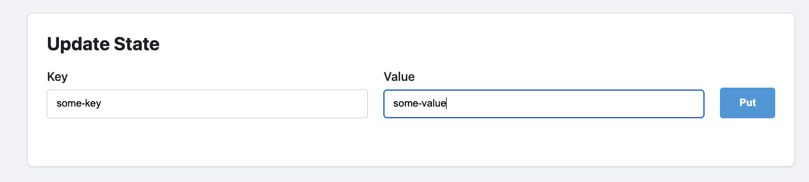
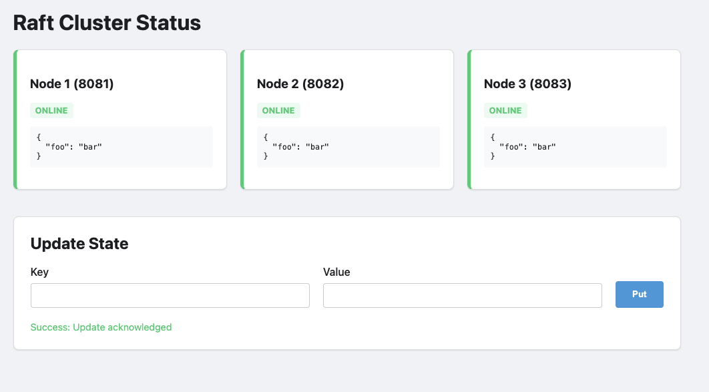
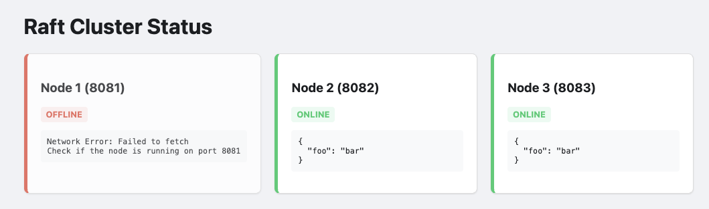
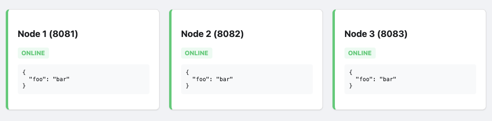

Building a 3-Node Cluster with Erlang and 'ra'
Summary
In this post, we’re going to build a small, highly available Key-Value store using ra, an implementation of the Raft consensus protocol. The "Wade" web server (not made by myself) is running to present this data to the end user.
Introduction
If you’ve spent any time in the Erlang ecosystem, you’ve heard the mantra: "Let it crash". Erlang supervisors are world-class at restarting processes and returning a system to a clean state.
But there is a ceiling to what a supervisor can do. A supervisor can restart a process, but it can't magically recover a mailbox that was purged during a crash. It can't synchronize state across a physical network partition.
This feature allows data to be synchronised across all 'nodes' in the cluster, and have the same code deployed for all nodes in the group.
This demonstration uses erlangs built-in distribution mechanism for communication, the raft protocol as a method of resolving cluster state, and a webserver to display the internal state.
There was a post on the erlang subreddit which talked about an elixir. That poster talks about his struggles on implementation, instead of that i plan to talk about the practical side while using 'ra' in erlang.
The Architecture:
In this specific implementation, I've chosen some useful erlang libraries:
- Ra: A Raft Implementation : This is the engine. It handles the KV storage and ensures every node in the cluster agrees on the order of operations.
- Wade: This handles our HTTP GET/POST requests.
In our example, there will be three nodes on the same IP, each 'node' will have its own 'wade' webserver running on their own ip, each 'nodes' special config is in the ./config directory.
Getting "Consensus" and dealing with failures:
The Raft Consensus algorithm is a distributed consensus algorithm between different 'nodes'. When the cluster starts, it DOES require all the nodes to connect and join the cluster. Only after the cluster is formed can the system safely deal with failure.
The internal tooling that the "RA" protocol uses, requires each node to store a log of its state. When the node fails or is added, the log is replayed on the node that does not contain the most recent data set.
Internallly this is handled by the ra:process_command/2 function. That command is replicated
across each node in the cluster. Only once a majority of nodes have acknowledged it
(aka quorum) does the state actually update across the nodes.
The implementation:
To get this running, we’ll us rebar3. Our goal is to have the ra library and our
wade endpoints initialized as part of the application startup, lets do that.
1. Dependencies and Profiles
Create a new app:
$ rebar3 new app ha_app
In ha-ap/rebar.config, we define our dependencies and setup profiles so we can run
three nodes, each with their own relevant configuration file.
{deps, [ {ra, "2.0.0"}, {wade, "0.1.0"} ]}.
{profiles, [
{node1, [{shell, [{config, "config/node1.config"}]}]},
{node2, [{shell, [{config, "config/node2.config"}]}]},
{node3, [{shell, [{config, "config/node3.config"}]}]}]}.
In this example, we'll have this running on a single machine, with each 'node' on a different TCP port, because its easier.
2. The Supervisor and Cluster Init
The first step would be to create module that implements the 'ra_machine' behavior. This is not a gen_server, this defines the 'Machine Module' and then pass it to the cluster initialization (in ra:start_cluster/4).
init([]) ->
%% Each node needs its own identity in the RA cluster
Id = {kv_store, node()},
%% The Machine logic
Machine = {module, my_kv_machine, #{}},
%% Define the cluster members
Nodes = [
{kv_store, 'node1@127.0.0.1'},
{kv_store, 'node2@127.0.0.1'},
{kv_store, 'node3@127.0.0.1'} ],
RaSpec = #{ id => ra_cluster_init,
start => {ra, start_cluster, [default, kv_store, Machine, Nodes]},
restart => transient },
{ok, {#{strategy => one_for_all, intensity => 5, period => 10}, [RaSpec]}}.
3. The cluster bootstrapper.
The ha_app_bootstrapper.erl module is a gen_server responsible for ensuring the Raft cluster is initialized and that the local node correctly joins or restarts its participation in that cluster.
How it "Calls Itself" (The Bootstrap Loop)
The module uses Erlang's message-passing system to create a non-blocking retry loop. This prevents the node from hanging if peers are not yet online. This is the method that is discussed in Erlang in Anger, (Chapter 2.2) which talks about providing guarantees during the initialization phase.
In our ha_boot ( ha_app_bootstrapper.erl ), in it:
- Recurrence: Inside handle_info(bootstrap, State), if the cluster isn't ready or a condition isn't met (e.g., the Raft system hasn't started or the node is waiting for the leader), it uses timer:send_after(1000, bootstrap) to schedule the next attempt.
- Why this pattern? It allows the gen_server to remain responsive to other system messages while "polling" for the cluster state in the background.
How it Starts or Joins the Cluster
The logic follows a specific hierarchy of checks to determine the node's role:
- Step A: Network Connectivity
handle_info(bootstrap, State = #{nodes := Nodes}) -> ClusterName = kv_store, ServerId = {ClusterName, node()}, %% Ensure we are connected to the network [net_adm:ping(N) || N <- Nodes],Before doing anything else, it runs [net_adm:ping(N) || N <- Nodes]. This ensures the underlying Erlang distribution is linked, allowing the ra library to communicate with peers.
- Step B: Starting the Raft System
Raft is a consensus algorithm designed for managing a replicated log across a cluster of nodes, ensuring all nodes agree on the same data and state, even during failures. Raft clusters usually need an odd number of nodes, (most commonly 3 or 5), to ensure a quorum while ensuring fault tolerance.
A 3-node cluster tolerates 1 failure, while 5 nodes tolerate 2 failures. While a 2-node minimum is technically possible, it is not recommended due to lack of fault tolerance.
To start, this code calls ra:overview(). If the system is not started, the module triggers ra_system:start_default(). It then waits 500ms and uses timer to send a message back to this same function, and try again. On the second time through the default ra_system should be started and the ra:overview() function should return map.
case ra:overview() of system_not_started -> ra_system:start_default(), timer:send_after(500, bootstrap), {noreply, State}; #{servers := Servers} -> ... - Step C: Restarting or Joining (Existing State)
If the Raft system is running, it checks if this node already knows about the kv_store cluster:
- Restarting: If the server entry exists but the pid is undefined, it means the node was previously part of the cluster but stopped. It calls ra:restart_server(ServerId) to resume.
- Already Running: If the server is already active, it simply updates the local cl_update tracker.
#{servers := Servers} -> case maps:find(ClusterName, Servers) of {ok, #{pid := undefined}} -> io:format("~p: Restarting existing server ~p~n", [node(), ClusterName]), ra:restart_server(ServerId), cl_update:set_started([{ClusterName, N} || N <- Nodes]), {noreply, State}; {ok, _} -> cl_update:set_started([{ClusterName, N} || N <- Nodes]), {noreply, State}; error -> .... - Step D: Bootstrapping a Fresh Cluster
case node() == hd(Nodes) of true -> io:format("~p: Bootstrapping fresh cluster ~p~n", [node(), ClusterName]), Machine = {module, my_kv_machine, #{nodes => Nodes}}, ServerIds = [{ClusterName, N} || N <- Nodes], case ra:start_cluster(default, ClusterName, Machine, ServerIds) of {ok, _, _} -> cl_update:set_started(ServerIds), {noreply, State}; _ -> timer:send_after(1000, bootstrap), {noreply, State} end; false -> timer:send_after(1000, bootstrap), {noreply, State} endIf the kv_store cluster doesn't exist at all (the error case):
- The Primary Node: Only the first node in the configuration list (hd(Nodes)) is allowed to initiate ra:start_cluster/4. This prevents race conditions where multiple nodes try to "create" the cluster simultaneously.
The Follower Nodes: If a node is not the first in the list, it does nothing except schedule a retry. It waits for the Primary node to successfully start the cluster; once the cluster is live, the follower will detect it in the next loop and join automatically via the ra library's internal replication.
Summary of Logic Flow
- Ping peers to establish Erlang distribution.
- Start the underlying Raft library if it's down.
- Recover the local Raft server if it was previously initialized but crashed.
- Elect the first node to define the cluster for the first time.
- Retry until the state is "Started."
This would allow the cluster to start (from no state), allow any node to fail (master or otherwise) and be able to rejoin the cluster. This doesn't allow any node that can join the 'erlang' distribution, but must be one of the specific nodes in the init() function.
All the nodes run the 'same code, there is no special 'leader' code, this makes the distribution of the same code across all nodes.
init([]) -> Nodes = ['node1@127.0.0.1', 'node2@127.0.0.1', 'node3@127.0.0.1'], self() ! bootstrap, {ok, #{nodes => Nodes}}.
3. The State Machine (src/my_kv_machine.erl)
This is where the 'consensus' becomes 'state'. RA internally replays commands to recreate the map. This is a very simplified machine and more complex "state machines" can be used to represent more specific data. In this example i'm using a erlang map to represent the system state.
The RA team has more information on this, I strongly reccomend you check out what the wrote regarding writing a state machine, which explains how this work in depth better than I can do.
-module(my_kv_machine).
-behaviour(ra_machine).
-export([init/1, apply/3]).
init(_Config) -> #{}.
apply(_Meta, {put, Key, Val}, State) -> NewState = maps:put(Key, Val, State),
{NewState, ok, []};
apply(_Meta, get_all, State) -> {State, State, []}.
The document mentions "Providing a client API", which I had done in the in
the module cl_update. My implementation is a gen_server which wraps
the important calls to ra:process_command/2 function.
My example has removed all the type spec attribute because it ended up making the information overload too high.
4. The Web Handler (src/wade_raft_handler.erl)
The web site we have created is a simple method to show the operational status of each of the cluster nodes. Each of the nodes serves up the same data, querying each of the nodes synchronized 'key/value' store.
-module(wade_raft_handler).
-export([handle/2]).
handle(['GET', <<"/state">>], _Req) ->
{ok, State, _Leader} = ra:local_query(kv_store, get_all),
{200, [{"Content-Type", "application/json"}], json:encode(State)};
handle(['POST', <<"/data">>], Req) ->
Body = wade_req:body(Req),
#{<<"key">> := K, <<"val">> := V} = json:decode(Body),
ra:process_command(kv_store, {put, K, V}),
{201, [], <<"Accepted">>};
handle(['GET', <<"/">>], _Req) ->
PrivDir = code:priv_dir(ha_app),
{ok, Html} = file:read_file(filename:join([PrivDir, "index.html"])),
{200, [{"Content-Type", "text/html"}], Html}.
The magic to query this correctly is in the priv/ra_status.html file. It connects
and requests =/state to each fo the nodes in the server. This is hardcoded to
only three nodes, with specific names, which was done to simplify the demonstration.
Demonstration.
Robert Virdings has a famous quote and now for the tricky bit. You may hav enoticed that this is at the start of the demonstration section, that is intentional.
Step 1: The "Happy Path"
Erlang has its own distribution protocol, which allows connected erlang nodes to be able to communicate with other nodes using the built-in library using existing erlang patterns even when dealing with executing and data across systems.
In the demonstration below, it does NOT use TLS. Using the Erlang Cookie mechanism without TLS (Transport Layer Security) encryption is insecure for any environment exposed to a public or untrusted network. This security issue is well documented and implementing TLS for your environment is an exercise for the reader.
Boot your nodes in three different terminals:
rebar3 as node1 shell --name node1@127.0.0.1 --setcookie foo1234 rebar3 as node2 shell --name node2@127.0.0.1 --setcookie foo1234 rebar3 as node3 shell --name node3@127.0.0.1 --setcookie foo1234
Post some data to the leader with curl or visit the web page:

This should appear in the display box above the form:

Step 2: Terminating the node
Find the OS process for Node 1 (the Leader) and kill -9 it. The cluster pauses
for a split second, heartbeats fail, and Nodes 2 and 3 hold an election. One is
promoted. The "Quorum" (2 out of 3) is maintained and the system stays
functional.

Step 3: The Resurrection
Bring Node 1 back online. It will realize it is behind. It will receive a log update from the new Leader and jump forward in history instantly. The protocol handles the "catching up" automatically.
It isnt exciting, but all nodes end up syncing up.

Conclusion "In Erlang, we say 'Let it crash', fortunately recovering system state in an environment when you need HA is quite decent.
Trade offs
Using the ra library for consensus in Erlang/OTP applications offers a robust, Raft-based alternative to erlangs built in 'mnesia'.
Its primary advantage lies in its deep integration with the Erlang ecosystem, providing a gen_server-like interface that simplifies the management of replicated state machines while handling the complexities of leader election and log replication.
However, these guarantees come with the inherent overhead of the Raft protocol, including increased network latency and disk latency for write-ahead logging and the requirement for a strict quorum, which can lead to availability loss during significant network partitions.
Furthermore, while ra excels at maintaining consistency for small to medium-sized states, managing very large states requires careful snapshotting strategies to avoid excessive memory usage and long recovery times, making it a powerful tool that demands a clear understanding of its operational limits.
When designing with this state, the state managed by the raft protocol could be a pointer to specific up to date resources that clients can access. This may significantly reduce recovery time and complexity.
The other unsaid trade off, is that this requires additional development work if you're going to use the erlang release process, each cluster must be re-created at each of of the code upgrade points.
Future.
It may be worth investigating, several operational and architectural challenges emerge that warrant deeper investigation. Distributed systems built on Raft consensus, such as those utilizing the ra library, offer robust consistency, but their real-world performance is heavily dictated by how they handle network volatility and data density.
Operational Resilience and Partition Logic
A primary focus of our upcoming research will be the nuance of failure detection. There is a significant operational difference between a terminated node and a simple network partition. We aim to rigorously test how the cluster behaves when links "flap" or experience high latency without a clean process exit. Understanding these edge cases is vital for preventing unnecessary leader elections and ensuring the system remains available during transient network instability.
Benchmarking State and Recovery
Efficiency is another major frontier. We plan to quantify the "storage tax" of the State Machine—measuring the disk footprint utilized by ra for its write-ahead logs and snapshots compared to the actual application data. This data will serve as the foundation for benchmarking recovery times; specifically, how synchronization latency scales as data volume grows. If we figure out what size ends up being a bottleneck we can make more educated decisions on what size data is right for an application.
Dynamic Scaling and Advanced Storage
Finally, we are exploring ways to move beyond the constraints of static configuration. Our goals include:
Dynamic Membership: Implementing methods to grow or shrink the cluster on the fly, removing the need for hardcoded node lists in sys.config.
Optimized Bootstrapping: Investigating how to start nodes with pre-loaded snapshots or sync directly from external data stores to bypass long replay cycles.
Khepri Integration: Researching the use of Khepri—RabbitMQ’s tree-like storage structure—as a high-level backend to manage state more efficiently than standard key-value approaches.